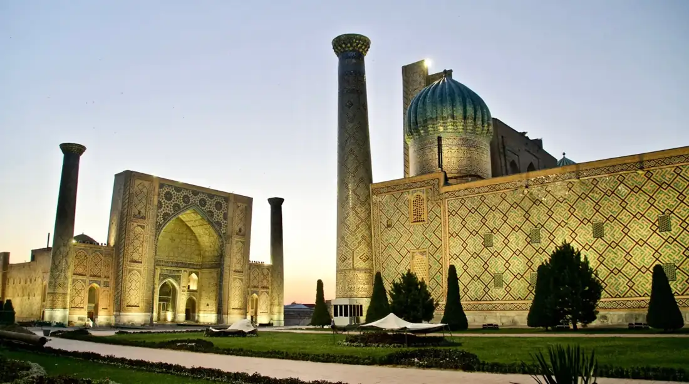

Ən yaxşı qiymət1 gün
01
Ən yaxşı qiymət1 gün
01Daşkənd şəhər turu
DaşkəndPaytaxtda bir gün: Həzrəti İmam, Çorsu bazarı, metro və Əmir Teymur meydanı
başlayaraq…bir nəfər üçün
Tura bax→
Özbəkistan üzrə fərdi və kiçik qrup turları — Səmərqənd, Buxara və Xivənin firuzəyi günbəzləri, səhrada alaçıq düşərgələri, dağ gölləri və ən səmimi qonaqpərvərlik. Hər şeyi biz planlaşdırırıq, siz sadəcə səyahət edirsiniz.
Özbəkistan haqqında daha çoxKiçikdən başlayın və ya bütün yolu keçin — hər tura lisenziyalı bələdçi, nəqliyyat və 24/7 dəstəyimiz daxildir.
Özbəkistanla ilk tanışlıq üçün ideal — Daşkənddə bir gündən Səmərqənd, Buxara və ya dağlarla dörd günə qədər.
Ən yaxşı qiymət1 gün
01Paytaxtda bir gün: Həzrəti İmam, Çorsu bazarı, metro və Əmir Teymur meydanı

Ən yaxşı qiymət3 gün 02Paytaxt və Registan üç gündə, Afrosiyob sürətli qatarı ilə
 Ən yaxşı qiymət4 gün
03
Ən yaxşı qiymət4 gün
03İpək Yolunun üç böyük şəhəri dörd gündə sürətli qatarla
 Ən yaxşı qiymət4 gün
04
Ən yaxşı qiymət4 gün
04Çimgan, Amirsoy və Çarvaq gölü, üstəlik Registan — dörd gün
Ən sevilən proqramlarımız: İpək Yolunun tam hekayəsi, yüksək səviyyəli otellər və hər detal təşkil olunub.
 İmza8 gün
01
İmza8 gün
01Xivə, Buxara, Səmərqənd və Daşkənd — hər şənbə Xivədən başlayır
 İmza5 gün
02
İmza5 gün
02İpək Yolunun iki incisi beş gündə
 İmza10 gün
03
İmza10 gün
03Xivədən Səmərqəndə, səhra alaçığında bir gecə ilə
 İmza7 gün
04
İmza7 gün
04Böyük imamlara və sufi ustadlara ziyarət
İdeal səfərinizi görmürsünüz? Cütlüklər, ailələr və qruplar üçün fərdi marşrutlar qururuq.
Şəhərlər, mədəniyyət və təbiət haqqında qısa filmlər — səfərdən əvvəl izləyin.
Özbəkistan Turizm Komitəsinin rəsmi kanalından və beynəlxalq mediadan (Euronews, BBC, Insider, Eater) videolar · YouTube-da izlə →
Tək səyahətçilər və cütlüklər üçün sabit çıxış tarixləri — ingilis və ya rusdilli qrup seçin, hər şey təşkil olunub.
Bələdçinin hansı dili sizə uyğundur?
Tam tur almadan bir xidmət bron edin — bələdçi, nəqliyyat, otel, hava limanında qarşılama və ya eSIM.
 Lisenziyalı bələdçilərŞəhər turları, muzeylər və tam səfərlər üçün peşəkar yerli bələdçilər.→
Lisenziyalı bələdçilərŞəhər turları, muzeylər və tam səfərlər üçün peşəkar yerli bələdçilər.→ Sürücü ilə nəqliyyatSürücü ilə şəxsi avtomobil, minivan və ya avtobus — şəhərlərarası transferlər, şəhər turları və bir günlük səfərlər.→
Sürücü ilə nəqliyyatSürücü ilə şəxsi avtomobil, minivan və ya avtobus — şəhərlərarası transferlər, şəhər turları və bir günlük səfərlər.→ Otel bronuBüdcənizə uyğun otelləri tapır və bron edirik — qonaq evlərindən 5 ulduzlu otellərə qədər.→
Otel bronuBüdcənizə uyğun otelləri tapır və bron edirik — qonaq evlərindən 5 ulduzlu otellərə qədər.→ Hava limanında sürücü ilə qarşılamaAdınız yazılmış lövhə ilə sürücü sizi gəliş zalında qarşılayır və otelə aparır.→
Hava limanında sürücü ilə qarşılamaAdınız yazılmış lövhə ilə sürücü sizi gəliş zalında qarşılayır və otelə aparır.→ Hava limanında bələdçi ilə qarşılamaBələdçiniz sizi gəliş zalında qarşılayır, SIM kart və valyuta dəyişməkdə kömək edir və sizinlə otelə gedir.→
Hava limanında bələdçi ilə qarşılamaBələdçiniz sizi gəliş zalında qarşılayır, SIM kart və valyuta dəyişməkdə kömək edir və sizinlə otelə gedir.→ Qruplar, tədbirlər və MICEKorporativ səfərlər, insentiv turlar, konfranslar və böyük qrup tədbirləri.→
Qruplar, tədbirlər və MICEKorporativ səfərlər, insentiv turlar, konfranslar və böyük qrup tədbirləri.→ Özbəkistan üçün eSIMEnişdən dərhal mobil internet — nə SIM mağazası, nə də pasport növbəsi.→
Özbəkistan üçün eSIMEnişdən dərhal mobil internet — nə SIM mağazası, nə də pasport növbəsi.→Diqqətlə seçilmiş yerli insanlar. Real rəyləri görürsünüz; Moviy Nomad vasitəsilə təhlükəsiz bron edib ödəyirsiniz.
Yerləri, gecələri, otelləri, nəqliyyatı və bələdçini seçin — marşrutu xəritədə və ani qiymət hesabını görün.
Qurmağa başla →


Komandamız Özbəkistandadır və hər küçəni, bələdçini və gizli incini tanıyır.
Otellər, qatarlar, transferlər, bələdçilər və giriş biletləri — bir aydın paketdə.
Halal yemək, namaz vaxtı və ailələr üçün rahat temp.
İngilis və rusdilli bələdçilər; türk və ərəb dilləri sorğu ilə.
Gizli ödənişlər yoxdur — bron etməzdən əvvəl nəyin daxil olduğunu dəqiq görürsünüz.
Bütün səfər boyu WhatsApp və ya Telegram-da canlı insan.
2,5 il ərzində Moviy Travel komandamız 10 000-dən çox səyahətçi üçün səfər təşkil edib. Moviy Nomad eyni komandanı, bələdçiləri və sürücüləri bütün dünyadan gələn qonaqlara gətirir — Özbəkistan üzrə lisenziyalı turoperator (DMC): Xivə, Buxara, Səmərqənd, Daşkənd və digərləri.
✓Lisenziyalı turoperator — Özbəkistan Respublikası Turizm Komitəsi, lisenziya № 887333
Səfərlərimizi Instagram-da görün @moviy_travel58K izləyici · real səfərlər və səyahətçilərlə 600+ paylaşım→Səyahətçilərimizin qrup çatından real mesajlar, özbək dilindən tərcümə olunub.
Bütün zəhmətiniz və qayğınız üçün təşəkkür edirəm. İldə bir dəfə səyahət edəcəyimə söz verdim — sizinlə, dostlarım və ailəmlə birlikdə.
Əla xidmət: sürücümüz Nodirbek hamıya ailə üzvü kimi yanaşdı və uzun yol heç uzun görünmədi. Hələ də fikirləşirsinizsə — sadəcə gedin, peşman olmayacaqsınız.
Gözlədiyimizdən də yaxşı oldu. 500 nəfəri bir araya gətirib hər şeyi qaydasına salmaq asan iş deyil. Zəhmət olmasa, belə səfərləri daha çox təşkil edin!
Keçən həftə həqiqətən unudulmaz oldu — bəlkə də bu mənim ilk səfərim olduğu üçün. Gözəl təəssüratlar və heyrətamiz insanlar haqqında xatirələrlə qayıtdım.
Səyahətçilərimizin paylaşdığı fotolar və hekayələr. Bizimlə səyahət etdiniz? Özünüzünkünü əlavə edin!
Hələ hekayə yoxdur — ilk paylaşan siz olun.
Bir çox ölkənin vətəndaşları Özbəkistana vizasız və ya sadə elektron viza ilə gələ bilər. Pasportunuzun ölkəsini deyin — cari qaydaları yoxlayaq.
Yaz (aprel–iyun) və payız (sentyabr–oktyabr) Səmərqənd, Buxara və Xivə üçün idealdır. Yay dağlar, Çarvaq gölü və Fərqanə vadisi üçün yaxşıdır; qış sakit və ucuzdur.
Bəli. Cütlüklər və ailələr üçün fərdi turlar, həmçinin qrup turları və turizm agentlikləri üçün proqramlar planlaşdırırıq.
Bölgədəki yeməklərin çoxu halaldır. Proqramı namaz vaxtlarına və müqəddəs yerlərin ziyarətinə uyğun da planlaşdıra bilərik.
Bizə WhatsApp və ya Telegram-da yazın. Proqramı təsdiqlədikdən sonra bronunuzu təsdiqləyir və ödəniş rekvizitlərini göndəririk.
Bəli. Agentliklər və qruplar üçün yerli xidmət və tərəfdaş qiymətləri təklif edirik.
Sizə uyğun yolu seçin — ideyalar, proqram və qiymətlə cavab verəcəyik.
+998 97 542 77 99 · Maftuna Artikova